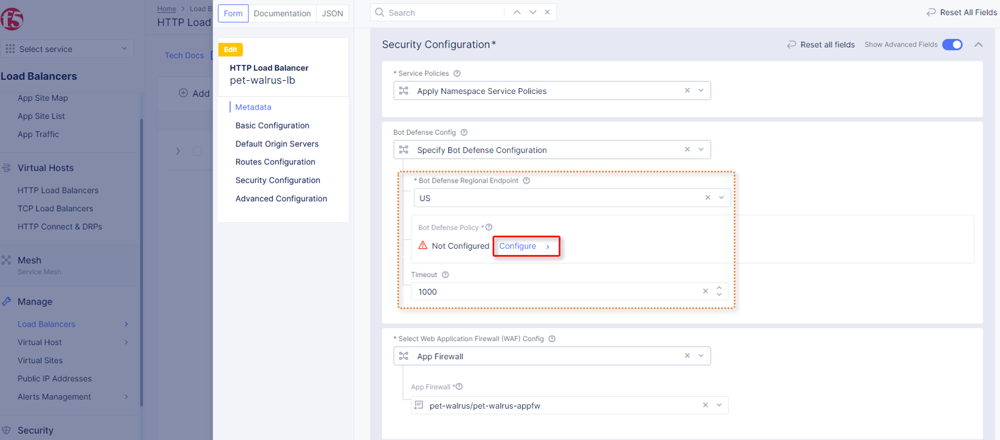

3. Lab 2: Reviewing Signature-based Bot Strategies and enabling F5 Distributed Cloud BotDefense
The following lab tasks will guide you through a review of signature-based Bot protections
already available via the Web Application Firewall configuration. The security configuration
will then be extended through F5 Distributed Bot Defense, an AI-driven, behavioral security
feature set to protect the previously configured application from advanced Bot threats.
3.1. Task 1: Reviewing Signature-based Bot protection
In this task you will review the Bot signature configuration and view logged security events.
This lab will begin back in the F5 Distributed Cloud Console.
In the left-hand navigation menu, expand the Security section and click the App
Firewall link.
On your App Firewall policy <namespace>-appfw, click the three dots in the Actions
column and then click Manage Configuration.
Click Edit Configuration in the top right corner.
|


|
Using the left-hand navigation, click Detection Settings and the in the Detection
Settings section, click the Signature-Based Bot Protection dropdown menu.
From the Signature-Based Bot Protection dropdown menu, select Custom.
|
 |
In the expanded configuration window, observe the three Bot signature categories;
Malicious, Suspicious, and Good. Also observe the actions Block, Ignore, and
Report which can be reviewed by selecting one of the dropdowns.
Click Cancel and Exit to leave this window.
|


|
Open a terminal window or DOS prompt on your respective client and issue the following
curl command: curl -v http://<namespace>lab-sec.f5demos.com.
Observe the User Agent and response content.
Note
curl is installed on Windows10+, and is available on most Linux or MAC platforms.
|
 |
Return to the F5 Distributed Cloud Console, in the left-hand navigation menu, expand the
Virtual Hosts section and click the HTTP Load Balancers link.
On your named Load Balancer, select the Security Monitoring, link as shown.
|
 |
- From the Security Monitoring Dashboard, select Security Events.
|
 |
Locate your most recent security event, which should be your curl request. Expand the
security event as you have done in prior exercises to observe the “Suspicious” Bot
reporting. Remember the setting for Suspicious Bot was set to Report from Step 5 above.
|
 |
3.2. Task 2: Enabling AI-Driven F5 Distributed Cloud BotDefense
The following steps will enable you to deploy F5 Distributed Cloud BotDefense and understand its
implementation.
Open another tab in your browser (Chrome shown), navigate to your application/Load
Balancer configuration: http://<namespace>.lab-sec.f5demos.com.
Enable developer tools (Chrome shown (use F12)) and click on the Network tab.
Using the 3 bars/menu icon (top right), navigate to Access link.
In the resulting login screen use the following values to login and click Submit
- Identity: user@f5.com
- Token: password
|


|
In the Developer window, find the POST to auth.php. You can also use the filter
to find auth.php. Select the respective line as shown.
Select the Request tab in the payload window that appears and observe that you only
see limited form POST data (identity, token, & submit).
|


|
Return to the Load Balancer in the F5 Distributed Cloud Console, Manage > Load Balancer
> HTTP Load Balancers and use the Action Dots and click Manage Configuration
Click Edit Configuration in the top right-hand corner.
|


|
- Click Security Configuration in the left-hand navigation.
- From the Bot Defense Config dropdown, select Specify Bot Defense Configuration.
- In the added menu option, click Configure.
|



|
- Observe the additional positioning options in the JavaScript Insertion section.
- Click Configure in the Protected Endpoints Section
- In the new App Endpoint Type click Add Item
|


|
- In the Application Endpoint scroll through the section use the following values:
- Metadata\Name: auth-bot
- HTTP Methods: POST
- Protocol: BOTH
- Path\Path Match: Prefix
- Prefix: /auth.php
- Bot Traffic MitigationSelect Bot Mitigation Action: Block
- Scroll to the bottom and click Add Item
|


|
- Then click Apply on the App Endpoint Type screen
- Then click Apply on the Protected App Endpoints screen
- Then scroll to the bottom on the HTTP Load Balancer screen, and click Save and
Exit.
|


|
Repeat Task 2 Steps 1-6. Note you many need to close your browser and clean cookies
Observe now that there is additional telemetry being passed in the POST request. This
telemetry will be used to determine if the connecting client is an Automated Bot.
|
 |
End of Lab 2: This concludes Lab 2, feel free to review and test the configuration.
A brief presentation will be shared prior to the beginning of Lab 3.
|
 |
{kind=link}